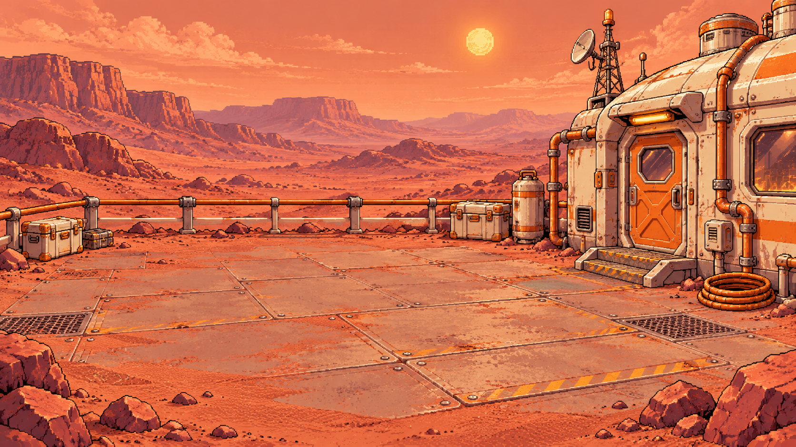

Solar Sweep
Brush the dust off the solar panels to restore power.
PANEL CLEANED0%
Let the sunlight reach the cells.
ARRAY 01DUST BLOCKING LIGHT
MISSION COMPLETE
Powers restored
The panel is clear. The habitat has power, and Dr. Ian is back online!
← Back to Tasks